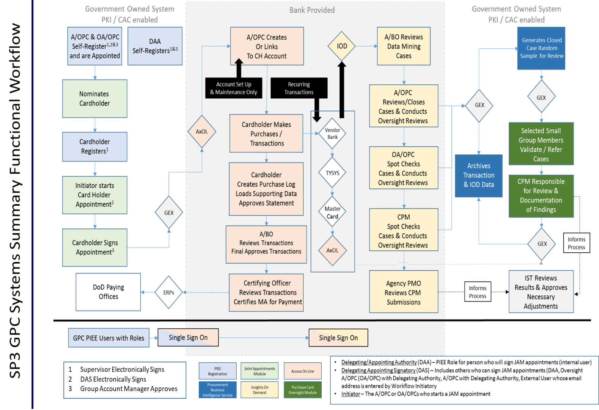

3-10. PAM (Procurement.Army.Mil) Portal
a. The ODASA(P)'s interactive Knowledge Management portal, Procurement.Army.Mil (PAM), serves as an official Army-wide source for acquisition policy, templates, learning tools and certified training. PAM provides Army contracting procedures and updates to critical programs and systems, including instant access to Army GPC policies, standard business processes and operating procedures. PAM's GPC page is https://procurement.army.mil/gpc.
b. A/OPCs, CHs, and BOs should use the PAM portal to access current GPC documents, samples, and processes as described throughout this AFARS Appendix EE. Available documents on PAM include, but are not limited to the following:
1) Army Purchase Request and Approval document
2) Sample Merchant Category Code (MCC) Override Requests
3) Procurement Management Review (PMR) Process
4) VCE/PMR GPC Toolkit
5) Sample Separation of Duties Waiver
6) Ammunition Process and Waiver Request
7) Refund Process
8) Level 4 A/OPC Annual Assessment
9) Sample Information Technology Approval System (ITAS) Approval Waiver
10) Army GPC Training Slides
Figure 3-1: GPC Electronic Systems Overview
